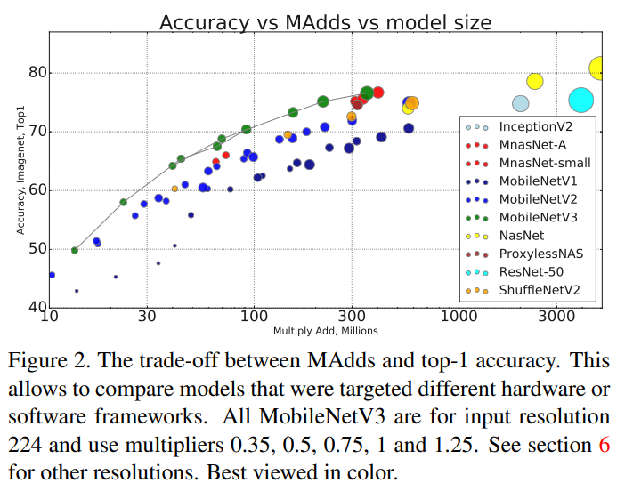
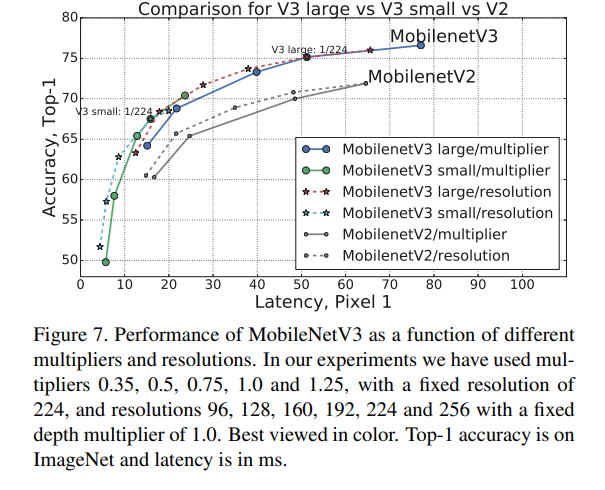

Approaches to neural compression¶
Optimize parameters of a nonlinear transform code¶
Vector-quantized variational autoencoder¶
RNN-based generative model of speech¶
Conditional GAN for images¶
Neural network structures for learning from quantized data¶
Binary Neural Networks¶
One-hot encode, then exploit sparsity¶
Transfer learning / Self supervised learning¶
Conventional transfer learning from pretrained mobilenet¶
Self supervised learning¶
Datasets and models for experiments¶
Images¶
Imagenet-1k and Mobilenet variants
Mobilenet models allow tradeoff between model complexity and accuracy
Two main hyperparameters: Width multiplier and resolution multiplier
Width multipler \(\alpha \in (0,1]\) controls the number of channels at each layer. Computational cost is proportional to \(\alpha^2\)
Resolution multiplier \(\rho \in (0,1]\) controls the resolution of each channel. Computational cost is proportional to \(\rho^2\)


Audio¶
Current audio models use similar CNN to images, but applied to a time-frequency representation of the audio
-
github repo describing pipeline
Data is resampled to 16 kHz
A time-frequency transform is applied
input size is 96x64